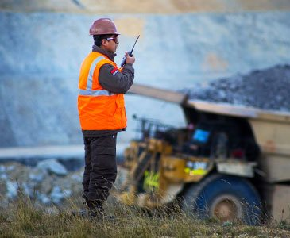

Inicio/Inversiones/Minería

Dialeca S.A. opera siete concesiones mineras sobre más de 5.800 hectáreas en Rivera y Durazno, Uruguay. El activo central es Cerro Papagayo, una reserva de hierro que integra toda la cadena: extracción, beneficiamiento, arrabio en Paraguay y salida propia por los puertos del grupo sobre la Hidrovía.
El punto gris ("sin confirmar") no es un estado real del modelo de datos — es el tratamiento visual para un proyecto sin ubicación ni estado cargado todavía. Se resuelve solo cuando el cliente aporta el dato (ver 04-lista-de-insumos-pendientes.md).